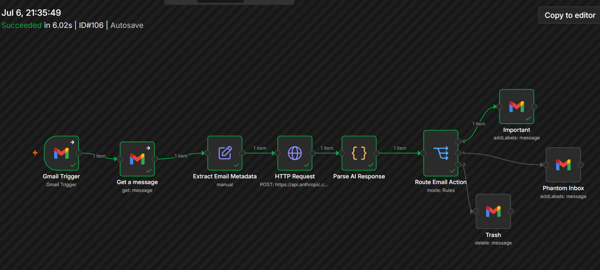

Backlog pressure
The goal was not just to delete old email. It was to create a repeatable system that could keep sorting new messages after the initial cleanup.
An automated Gmail classification and routing pipeline that turns incoming email into structured decisions. The workflow extracts message context, asks Claude for a JSON recommendation, then routes each email to the inbox, trash, or a review label called Phantom Inbox.
This n8n workflow view shows the complete routing path: Gmail trigger, message retrieval, metadata extraction, Claude API request, structured response parsing, and final Gmail action. No private message content, API keys, OAuth credentials, or inbox data are exposed.

A 15,000+ message backlog made the inbox hard to trust. Important messages, promotions, spam, and review-later items were all competing for attention. Basic rules were not enough because the decision often depended on sender context, intent, and professional relevance.
The goal was not just to delete old email. It was to create a repeatable system that could keep sorting new messages after the initial cleanup.
Claude provided flexible classification where keyword filters were too brittle, especially for ambiguous or context-dependent messages.
The workflow had to execute real Gmail outcomes: keep important messages visible, move low-value messages out of the queue, or label items for later review.
The important design choice was not simply adding AI. It was using AI for flexible judgment, then forcing the response into structured JSON that n8n could parse and route deterministically.
The workflow starts when a qualifying new email enters Gmail.
n8n extracts the subject, sender, body, and message context needed for classification.
Claude receives a focused prompt and returns category, confidence, action, and reasoning as structured JSON.
n8n parses the JSON and routes the message to the right branch based on action and confidence.
The workflow keeps important messages in the inbox, moves high-confidence low-value mail to trash, or applies the Phantom Inbox review label.
Important, professional, or time-sensitive messages stay visible for normal review and response.
High-confidence promotions, spam, and low-value messages leave the active queue while retaining Gmail's normal recovery window.
Review-worthy or ambiguous messages get labeled for later without competing with higher-priority work.
Designed prompts that return parseable JSON so the workflow could make reliable downstream decisions.
Raw email content broke request formatting until message bodies were safely serialized to handle newlines, quotes, and special characters.
Configured Google Cloud credentials, redirect behavior, test users, and secure environment variables without exposing private credential details.
Used n8n Rules to branch into multiple paths based on Claude's recommendation and confidence level.
After spending significant time troubleshooting Railway, shifted deployment work to Render when the original platform stopped producing useful progress.
When one approach hit practical limits, changed tactics instead of forcing the same failing path repeatedly.
I spent nearly an hour troubleshooting one issue with Claude. The breakthrough came when I realized I was repeating the same test path without changing the underlying variable. The issue was not only technical; the debugging process itself had become part of the problem.
If every test repeats the same hidden assumption, the tool can keep producing plausible next steps while the system keeps failing for the same reason.
AI can speed up troubleshooting, but the human still has to validate assumptions, inspect the system, and recognize when the test strategy needs to change.
Used an LLM where judgment was useful and constrained its output where reliability mattered.
Coordinated Gmail, Claude, OAuth, and n8n into one operating workflow.
Turned a messy recurring problem into a system with clear inputs, rules, actions, and review boundaries.
Worked through formatting, authentication, callback, deployment, and routing issues without exposing private data.
Recognized when a deployment path was consuming more time than it was worth and moved toward Render.
Shows the same habits needed in RevOps and Customer Ops: triage, prioritization, data hygiene, and process ownership.
I used AI where flexible judgment was valuable, then constrained the output into structured JSON so the workflow could make safe, deterministic decisions. The result was not just an AI tool. It was an operational system that could classify, route, and reduce inbox noise without constant manual sorting.